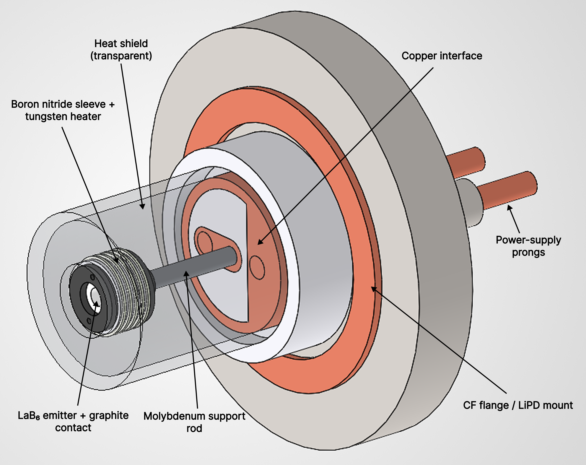

Experimental Plasma Hardware
LaB6 Cathode Development
May 2026 – Present
I designed, analyzed, fabricated, and commissioned a high-temperature cathode assembly for Swarthmore's LiPD plasma device. The system integrates a LaB6 emitter, a 1000 W heater circuit, refractory materials, thermal shielding, vacuum interfaces, and the existing experimental hardware.
CAD, analysis, fabrication, assembly, and test integration.
High-temperature LaB6 cathode mounted through a CF flange.
Visible purple discharge and measured discharge current before full power.
Thermal modeling, resistance sizing, machining, and vacuum hardware.
Building a Higher-Performance Electron Source
My work has focused on upgrading the electron source for the Little Plasma Device (LiPD) at Swarthmore College. LiPD is an approximately quarter-scale device with similar geometry and plasma behavior to WHAM, making it a useful local platform for studying physics relevant to the larger fusion experiment. The existing source used a hot tungsten filament, which produced limited electron beam current and plasma density. The goal of this project was to develop a more robust LaB6 cathode capable of producing substantially greater thermionic emission.
LaB6 is useful in plasma sources because it has a lower work function than tungsten, emits strongly at temperatures around 2000 K, and is more robust under plasma exposure than many conventional cathode materials. By increasing thermionic emission and plasma density in LiPD, the upgraded cathode allows us to study plasma behavior at Swarthmore in a regime more relevant to the questions our collaborators are asking about WHAM. The engineering challenge was not simply choosing the material, but designing a structure that could heat it effectively, support it mechanically, and survive inside the device.
LaB6 Cathode Assembly
The cathode assembly was designed in SolidWorks around a central goal: heating the LaB6 emitter efficiently enough to support strong thermionic emission while still allowing the hardware to be mechanically supported, electrically connected, and integrated into the existing LiPD plasma device through a CF flange interface.
The design had to function as a coupled thermal, electrical, and mechanical system. Current enters through the LiPD connector, passes through custom copper and molybdenum components into a graphite contact holding the LaB6, then continues through the tungsten heater wrapped around the boron nitride sleeve. The heat shield also serves a dual role by reflecting radiative heat back toward the emitter while helping complete the electrical return path.

The heater geometry was constrained by the available 50 A, 20 V power supply. To draw the full current and deliver the maximum 1000 W of heater power, the total circuit resistance needed to be 0.4 Ω. This meant the heater length, cross-sectional area, material resistivity, and contact geometry had to be designed around both electrical resistance and heat transfer.
Because the same parts often served multiple thermal, electrical, and mechanical functions, the assembly could not be developed with only one aspect of the project in mind. At emission temperatures, materials can melt, sublime, soften, or create electrical failure points if they are not selected and integrated carefully. Support rods, contacts, insulation, shielding, and interfaces all affected whether the cathode could heat efficiently, avoid shorts, survive installation, and operate reliably inside the device.


From Disk to Cylindrical Emitters
The cathode design began with disk-shaped LaB6 emitter concepts. These early designs helped define the basic constraints of the project: the cathode needed to be mechanically supported, electrically heated, and thermally isolated well enough to reach the temperature range required for strong thermionic emission.
As the design developed, we shifted toward a cylindrical LaB6 geometry. The primary advantage was thermal: a cylindrical sleeve made it possible to wrap tungsten heater wire around the emitter region, increasing the contact area between the heater and LaB6. This geometry was the first design in our thermal simulations to produce temperatures above 2000 K, making it a major turning point in the project.
The cylindrical concept was also motivated by prior LaB6 cathode work showing that, after a discharge is established, plasma bombardment can help maintain the cathode emission temperature even after heater power is reduced or removed. This made the cylindrical emitter especially interesting because it connected the mechanical geometry of the cathode to the plasma behavior it was intended to produce.


Designing for 2000 K Operation
Using SolidWorks FEA, I evaluated whether the cathode assembly could bring the LaB6 emitter into the temperature range needed for strong thermionic emission without pushing surrounding materials beyond their operating limits. The analysis connected the heater's electrical design to the physical geometry of the assembly: the heater had to deliver sufficient power to the emitter while support rods, contacts, shielding, and surrounding hardware created competing heat-loss paths.
The central design target was approximately 2000 K near the LaB6 source. Comparing geometries showed that the disk-shaped emitter could not be heated sufficiently within the assembly. The cylindrical heater concept improved thermal contact with the emitter region and produced the first simulation results above 2000 K.
A design target associated with strong LaB6 emission and a major increase in achievable plasma density.
Maximum electrical power available from the 50 A, 20 V supply.
Required total resistance to draw the full current from the power supply.
Concentrate heat at the emitter while limiting conductive and radiative losses.


First Plasma from the New Cathode
On July 17, 2026, the completed LaB6 cathode produced its first visible plasma after fabrication, assembly, and installation in LiPD. At 40 A of heater current—below the 50 A design operating point—we observed a purple discharge through the axial viewport and began measuring discharge current.
This was an initial commissioning milestone rather than a final performance run. It showed that the thermal, electrical, mechanical, and vacuum interfaces worked together well enough for the cathode to heat, emit electrons, and initiate a discharge. Full-power operation and quantitative density characterization are next.


Fast-Ion Orbit Modeling in WHAM Fields
Alongside the cathode hardware, I developed a separate full-orbit modeling workflow using actual WHAM magnetic-field data. The project classifies ion confinement, axial escape, and radial loss across velocity space and now has its own project page.